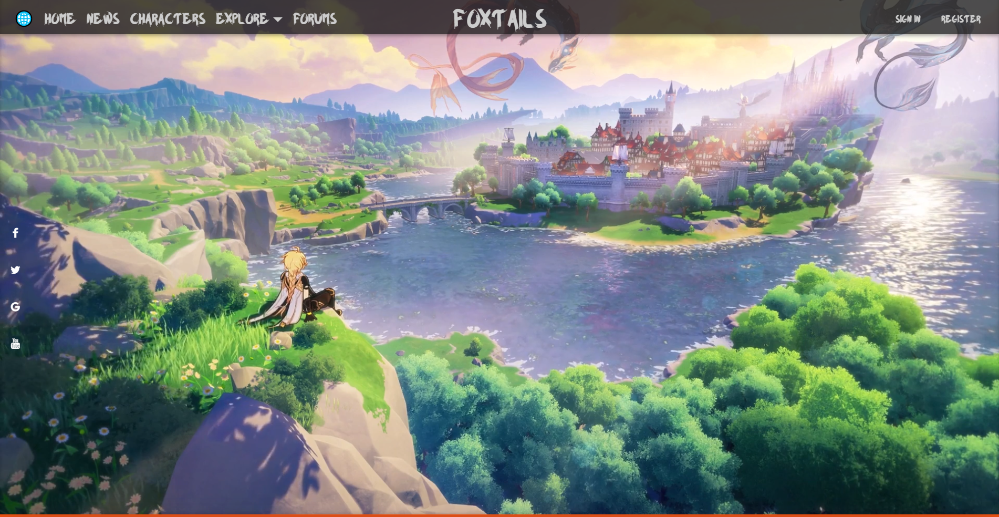
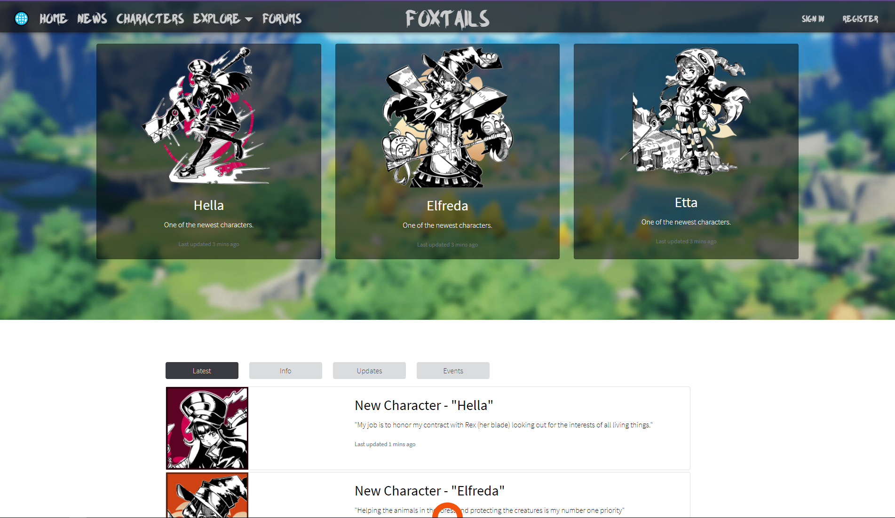
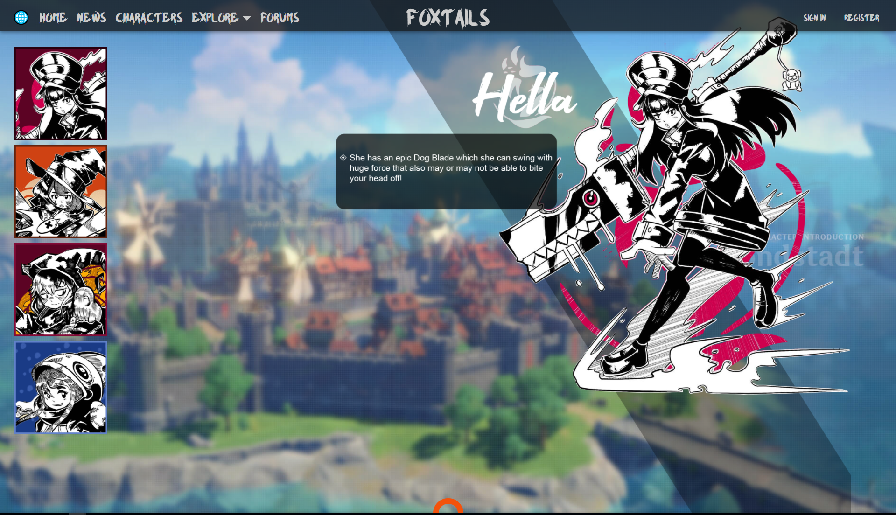
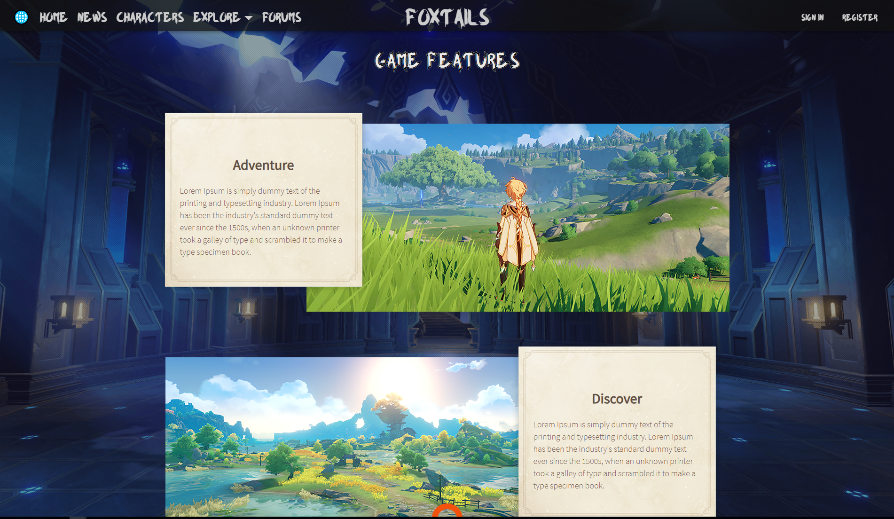

How to open doors tutorial
For my first year/second semester I had an assigment ot make a website and show that there is progress. I have worked on it for a long time. The website is not
fully completed. I have made a website for a "game". I am personally proud of it. Durring this semester as you know the corona virus hit us hard and to be honest
I did lose my motivation to work on the website and concentrated more on the main project that we had for Utimaco. This is a person project it is not meant for public usage.
It is hosted on a private domain provided from Fontys.
THIS IS ONLY FOR UNIVERSITY USAGE!!!
If you would like to see the website :
View Website
Here we have the main page of the website. From here you can scroll down to see some news. You can also nagivate from here to the News page, Character page and under the dropdown Explore you can click on About Game to learn more about it.

Here we have the news page where you can find more about the new features that have been implemented. Tried to keep it as simple as possible for the user to be able to navigate and understand it easier.

Here we have the charachers page. There is a small jquery to generate the information upon a selecting a character.

Here we have the about the game page. Here you "will find" videos and information attached to a image which explain and show how the game should look like.

Here we have footer which appears upon hovering over the orange circle. It pops up with the primery media icons which lead to their corresponding webpages.